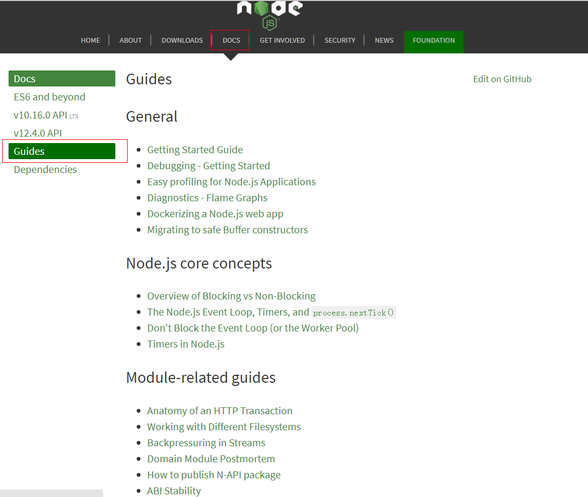
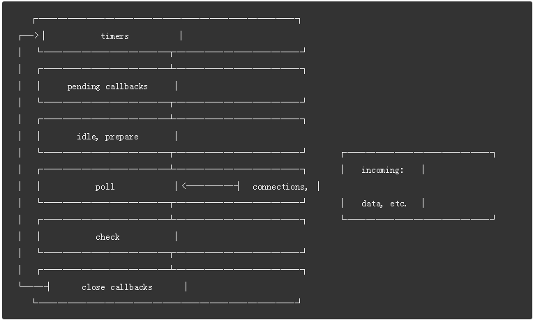

原文连接:https://www.cnblogs.com/dashnowords/p/11042623.html
目录

示例代码托管在：http://www.github.com/dashnowords/blogs
博客园地址：《大史住在大前端》原创博文目录
华为云社区地址：【你要的前端打怪升级指南】
原文地址：https://nodejs.org/en/docs/guides/event-loop-timers-and-nexttick
如果你常年游走于Nodejs中文网，可能已经错过了官方网站上的第一手资料，Nodejs中文网并没有翻译这些非常高质量的核心文章，只提供了中文版的API文档（已经很不容易了，没有任何黑它的意思，我也是中文网的受益者），它们涵盖了Node.js中从核心概念到相关工具等等非常重要的知识，下面是博文的目录，你知道该怎么做了。

Event Loop 是什么？
事件循环是Node.js能够实现非阻塞I/O的基础，尽管JavaScript应用是单线程运行的，但是它可以将操作向下传递到系统内核去执行。
大多数现代系统内核都是支持多线程的，它们可以同时在后台处理多个操作。当其中任何一个任务完成后，内核会通知Node.js，这样它就可以把对应的回调函数添加进poll队列，回调函数最终就能够被执行，后文中我们还会进行更详细的解释。
Event Loop 基本解释
当Node.js开始运行时，它就会初始化Event Loop，然后处理脚本文件（或者在REPL（read-eval-print-loop）环境中执行，本文不做深入探讨）中的异步API调用，定时器，或process.nextTick方法调用，然后就会开始处理事件循环（Event Loop）。
下图展示了事件循环的各个阶段(每一个盒子被称为事件循环中一个“阶段”)：

每一个阶段都维护了一个先进先出的待执行回调函数队列，尽管每一个阶段都有自己独特的处理方式，但总体来说，当事件循环进入一个具体的阶段时，它将处理与这个阶段有关的所有操作，然后执行这个阶段对应队列中的回调函数直到队列为空，或者达到了该阶段允许运行函数的数量的最大值，当满足任何一个条件时，事件循环都会进入下一个阶段，以此类推。
因为任何阶段相关的操作都可能导致更多的待执行操作产生，而新事件会被内核添加进poll队列中，当poll队列中的回调函数被执行时允许继续向当前阶段的poll队列中添加新的回调函数，于是长时间运行的回调函数可能就会导致事件循环在poll阶段停留时间过长，你可以在后文的timers和poll章节查看更多的内容。
提示：Windows和Unix/Linux在实现上有细小的差别，但并不影响本文的演示，不同的系统可能会存在7-8个阶段，但是最终要的阶段上图中已经展示了，这些是Node.js实际会使用到的。
事件循环阶段概览
timers-本阶段执行通过setTimeout( )和setInterval( )添加的已经到时的计划任务pending callbacks-将一些I/O回调函数延迟到下一循环执行（这里不是很确定）idle,prepare-内部使用的阶段poll-检查新的I/O事件；执行相关I/O的回调（除了“close回调”，“定时器回调”和setImmediate( )添加的回调外几乎所有其他回调函数）；node有可能会在这里产生阻塞check-执行setImmediate( )添加的回调函数close callbacks-用于关闭功能的回调函数，例如socket.on('close',......)
在每轮事件周期之间，Node.js会检查是否有处于等待中的异步I/O或定时器，如果没有的话就会关闭当前程序。
事件循环细节
timers
一个timer会明确一个时间点，回调函数会在时间超过这个时间点后被执行，而不是开发者希望的精确时间。一旦定时器时间过期，回调函数就会尽可能早地被调度执行，然而操作系统的调度方式和其他的回调函数都有可能会导致某个定时器回调函数被延迟。
提示：技术上来说,poll阶段控制着timers如何被执行。
下面的示例中，你使用了一个100ms后过期的定时器，接着花费了95ms使用异步文件读取API异步读取了某个文件：
const fs = require('fs');
function someAsyncOperation(callback){
//Assume this takes 95ms to complete
fs.readFile('/path/to/file',callback);
}
const timeoutScheduled = Date.now();
setTimeout(()=>{
const delay = Date.now() - timeoutScheduled;
console.log(`${delay}ms have passed since I was scheduled`);
},100);
// do someAsyncOperation which takes 95 ms to complete
someAsyncOperation(() => {
const startCallback = Date.now();
// do something that will take 10ms...
while (Date.now() - startCallback < 10) {
// do nothing
}
});当事件循环进入poll阶段时，它的待执行队列是空的（fs.readFile( )还没有完成），所以它将等待一定时间（当前时间距离最快到期的定时器到期时间之间的差值）。95ms过去后，fs.readFile( )完成了文件读取，并花费了10ms将回调函数添加进poll的执行队列是它被执行。当回调函数执行完毕后，队列中没有更多的回调函数了，事件循环就会再次检查下一个待触发的timer是否已经到期，如果是，则事件循环就会绕回timers阶段去执行到期timer的回调函数。在这个示例中，你会看到timer从设置定时器到回调函数被触发一共花费了105ms.
注意：为了避免在poll阶段阻塞事件循环，libuv(Node.js底层用于实现事件循环和异步特性的C语言库)设置了一个硬上限值（该值会根据系统不同而有变化），使得poll阶段只能将有限数量的回调函数添加进poll队列。
pending callbacks
这个阶段会执行一些系统操作的回调函数，例如一些TCP的错误。比如一个TCP的socket对象尝试连接另一个socket时收到了ECONNREFUSED，一些Linux系统会希望汇报这类错误，这类回调函数就会被添加在pending callbacks阶段的待执行队列中。
poll阶段
poll阶段有两个主要的功能：
- 计算需要阻塞的时长，以便可以将完成的I/O添加进待执行队列
- 执行poll队列中产生的事件
当事件循环进入poll阶段且此时并没有待执行的timer时，会按照下述逻辑来判断：
- 如果poll队列不为空，事件循环会以同步的方式逐个迭代执行队列中的回调函数直到队列耗尽，或到达系统设置的处理事件数量限制。
- 如果poll队列为空，则按照下述逻辑继续判断：
- 如果脚本中使用
setImmediate( )方法添加了回调函数，事件循环就会结束poll阶段，并进入check阶段来执行这些添加的回调函数。 - 如果没有使用
setimmediate( )添加的回调，事件循环就会等待其他回调函数被添加进队列并立即执行添加的函数。
- 如果脚本中使用
一旦poll队列为空，事件循环就会检查是否有已经到期的timers定时器，如果有一个或多个定时器到期，事件循环就会回到timers阶段来执行这些定时器的回调函数。
check
这个阶段允许开发者在poll阶段结束后立即执行一些回调函数。如果poll阶段出现闲置或者脚本中使用setImmediate( )添加了回调函数，事件循环事件循环就会主动进入check阶段而不会停下来等待。
setImmediate( )实际上是一个运行在独立阶段的特殊定时器。它通过调用libuv提供的API添加那些希望在poll阶段完成以后执行的回调函数。
通常，随着代码的执行，事件循环最终会到达poll阶段，它会在这里等待incoming connection,request等请求事件。然而，如果一个回调函数被setImmediate( )添加时poll阶段处于空闲状态，它就会结束并进入check阶段而不是继续等待poll事件。
close callbacks
如果一个socket或者句柄被突然关闭(比如调用socket.destroy( ))，close事件就会在这个阶段被发出。否则（其他形式触发的关闭）事件将会通过process.nextTick( )来发送。
setImmediate( )和setTimeout( )
setImmediate( )和setTimeout( )非常相似，但是表现却不相同。
setImmediate( )被设计来在当前poll阶段完成后执行一些脚本setTimeout( )会把一个脚本添加为一定时间过去后才执行的“待执行任务”
这两种定时器被执行的顺序依赖于调用定时器的上下文。如果都是在主模块中调用，定时器就会与process的性能相关（这也意味着它可能被同一个机器上的其他应用影响）。
例如下面的脚本中，如果我们一个不包含I/O周期的程序，他们的执行次序因为受到主线程性能的影响所以无法确定：
//timeout_vs_immediate.js
setTimeout(()=>{
console.log('timeout');
},0);
setImmediate(()=>{
console.log('immediate');
})$ node timeout_vs_immediate.js
timeout
immediate
$ node timeout_vs_immediate.js
immediate
timeout然而，如果将这它们的调用时机放入I/O周期中，immediate回调函数就会率先被执行：
// timeout_vs_immediate.js
const fs = require('fs');
fs.readFile(__filename,()=>{
setTimeout(()=>{
console.log('timeout');
},0);
setImmediate(()=>{
console.log('immediate');
})
})$ node timeout_vs_immediate.js
immediate
timeout
$ node timeout_vs_immediate.js
immediate
timeout使用setImmediate( )的主要优势在于在I/O回调函数中调用时，不论程序中有多少timers，它添加的回调函数总是比其他timers更早执行。
proess.nextTick( )
理解 process.nextTick()
你可能已经注意到尽管同样作为异步API的一部分，process.nextTick( )并没有展示在上面的图表中，因为技术层面来讲它并不是事件循环中的一部分。nextTickQueue队列将会在当前操作执行完后立即执行，无论当前处于事件循环的哪个阶段，这里所说的操作是指底层的C/C++句柄到待执行JavaScript代码的过渡(这句怪怪的，不知道怎么翻译，原文是 an operation is defined as a transition from the underlying C/C++ handler, and handling the JavaScript that needs to be executed)。
再来看上面的图表，任何时候当你在某个阶段调用process.nextTick( )，所有传入的回调函数都会在event loop继续之前先被解析执行。这可能会造成非常严重的影响，因为它允许你阻塞通过递归调用process.nextTick( )而使得事件循环产生阻塞，是它无法到达poll阶段。
为什么会允许这种情况存在？
为什么这种匪夷所思的情况要被包含在Node.js中呢？一部分是由于Node.js的设计哲学决定的，Node.js中认为API无论是否有必要，都应该异步执行，例如下面的代码示例片段：
function apiCall(arg, callback) {
if(typeof arg !== 'string')
return process.nextTick(callback, new TypeError('argument should be string'));
}这个示例对参数进行了检查，如果参数类型是错误的，它就会将这个错误传递给回调函数。这个API允许process.nextTick获取添加在callback之后的其他参数，并支持以冒泡的方式将其作为callback调用时传入的参数，这样你就不必通过函数嵌套来实现了。
这里我们做的事情是允许剩余的代码执行完毕后再传递一个错误给用户。通过使用process.nextTick( )就可以确保apiCall( )方法总是在剩余的代码执行完和事件循环继续进行这两个时间点之间来执行回调函数。为了达到这个目的，JS调动栈就会允许立刻执行一些回调函数并允许用户在其中递归触发调用process.nextTick( )，但是却不会造成爆栈（超过JavaScript引擎设置的调用栈最大容量）。
这种设计哲学可能会导致一些潜在的情况。例如下面的示例：
let bar;
// this has an asynchronous signature, but calls callback synchronously
function someAsyncApiCall(callback){callback();}
// the callback is called before `someAsyncApiCall` completes
someAsyncApiCall(()=>{
console.log('bar',bar);
});
bar = 1;用户定义的someAsyncApiCall( )虽然从注释上看是异步的，但实际上是一个同步执行的函数。当它被调用时，回调函数和someAsyncApiCall( )实际上处于事件循环的同一个阶段，这里并没有任何实质上的异步行为，结果就是，回调函数尝试获取bar这个标识符的值尽管作用域中并没有为这个变量赋值，因为脚本剩余的部分并没有执行完毕。
如果将回调函数替换为process.nextTick( )的形式，脚本中剩余的代码就可以执行完毕，这就使得变量和函数的初始化语句可以优先于传入的回调函数而被执行，这样做的另一个好处是它不会推动事件循环前进。这就使得用户可以在事件循环继续进行之前对一些可能的告警或者错误进行处理。比如下面的例子：
let bar;
function someAsyncApiCall(callback) {
process.nextTick(callback);
}
someAsyncApiCall(()=>{
console.log('bar',bar);
});
bar = 1;真实的场景中你会看到像下面这样的使用方式：
const server = net.createServer(()=>{}).listen(8080);
server.on('listening',()=>{});当端口号传入后，就会立刻被绑定。所以listening回调就会立即被执行，问题是.on('listening')这个回调的设置看起来并没有执行到。
这里实际上listening事件的发送就是被nextTick( )添加到待执行队列中的，这样后面的同步代码就可以执行完毕，这样的机制使得用户可以在后文设置更多的事件监听器。
process.nextTick( )对比setImmediate( )
这两个方法的命名令很多开发者感到迷惑。
process.nextTick( )会在事件循环的同一个阶段立刻触发setImmediate( )会在下一轮事件循环触发或者说事件循环的tick时触发
事实上它们实际做的事情和它们的命名应该交换一下。process.nextTick( )比setTimeout( )添加的回调要更早触发，但这种历史问题是很难去修正的，它会导致一大批npm包无法正常运作。每天还有大量的新的模块发布，这就意味着每过一天都有可能引发更多的破坏，尽管它们会造成混淆，但只能将错就错了。
我们推荐开发者在开发中坚持使用setImmediate( )，因为它的执行时机相对更容易推测（另外它也使得代码可以兼容更多的环境例如浏览器JS）。
为什么使用process.nextTick()
两个最主要的理由是：
- 它允许用户优先处理错误，清理任何后续阶段不再使用的资源，或者在事件循环继续进行之前尝试重新发送请求。
- 有时也需要在调用栈并不为空时去执行一些回调函数。
比如下面的示例：
const server = net.createServer();
server.on('connection',conn=>{});
server.listen(8000);
server.on('listening',()=>{});设想listen()在事件循环开始时先执行，但是listening事件的监听函数由setImmediate()来添加。除非传入hostname,否则端口不会被绑定。对于事件循环来说，它一定会到达poll阶段，如果此时已经有connection连接，那么connection事件就会在poll阶段被发出，但listening事件要等到check阶段能够被发出。
另一个示例是执行一个构造函数，它继承了EventEmitter并且希望在构造函数中触发一个事件：
const EventEmitter = require('events');
const util = require('util');
function MyEmitter() {
EventEmitter.call(this);
this.emit('event');
}
util.inherits(MyEmitter, EventEmitter);
const myEmitter = new MyEmitter();
myEmitter.on('event', () => {
console.log('an event occurred!');
});你不能在构造函数中立刻就触发这个事件，因为脚本还没有执行到位这个事件添加监听函数的那一句。所以，在构造函数内部你需要使用process.nextTick( )来设置事件发送的语句，才可以保证事件触发时，监听器已经被注册，示例如下：
const EventEmitter = require('events');
const util = require('util');
function MyEmitter() {
EventEmitter.call(this);
// use nextTick to emit the event once a handler is assigned
process.nextTick(() => {
this.emit('event');
});
}
util.inherits(MyEmitter, EventEmitter);
const myEmitter = new MyEmitter();
myEmitter.on('event', () => {
console.log('an event occurred!');
});